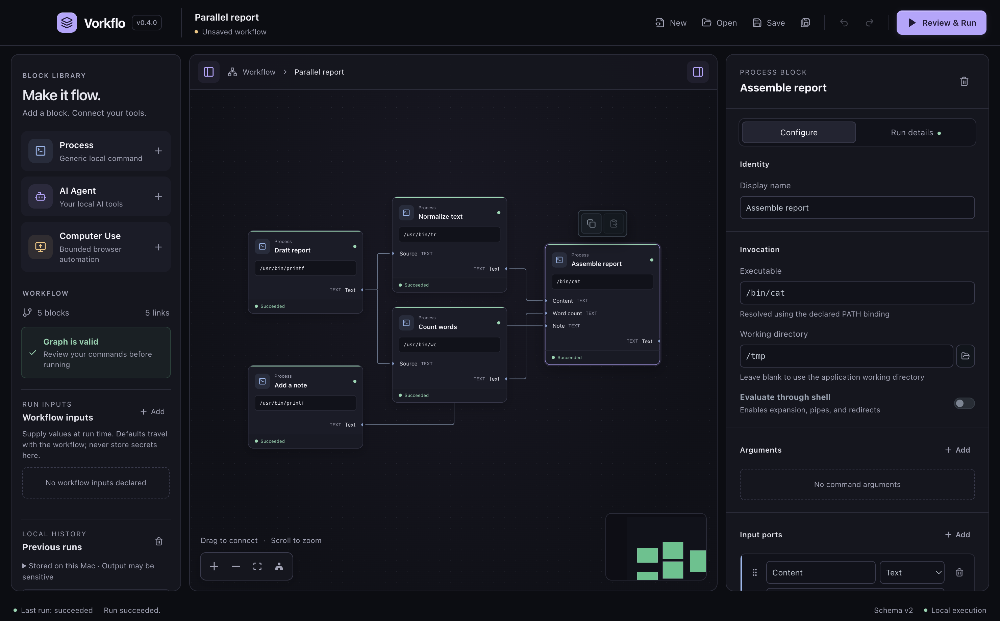

Start with what you know.
Drop in a command or agent. Connect text, JSON, and files. Let independent branches run in parallel.
Vorkflo brings your commands, scripts, and AI agents onto one canvas.
Build a workflow you can see. Run it on the machine you know.
printf
tr
wc
cat
Four blocks. Two parallel branches. One final result.
Connect the dots. See what happens. The demo is simulated in your browser.
A new home for your
already-favorite tools.
LESS IN YOUR HEAD. MORE ON THE CANVAS.
An open canvas for the big idea. A precise inspector for the little things. And a clear view of what happens between them.

Drop in a command or agent. Connect text, JSON, and files. Let independent branches run in parallel.
Check commands, arguments, working directories, and environment bindings before you press go.
See each step’s inputs, outputs, errors, and timing. Come back to local run history when you need it.
AT HOME ON YOUR MACHINE
Your workflows and run history stay local. No Vorkflo account, no hosted workflow service. Just your tools, working your way.
Connected tools may use their own cloud services.
SMALL BLOCKS. BIG POSSIBILITIES.
Turn trusted commands into reusable building blocks, with explicit arguments and visible connections.
Connect Codex, Cline, or Antigravity with visible instructions and optional Git worktrees.
Inspect results as they happen. Keep bounded local history across restarts, with errors and timing in view.
Yes. Vorkflo is free and open source under the MIT license. You bring your own tools; any paid AI services or accounts those tools use are separate.
The desktop download supports Apple silicon Macs running macOS 12 or later. Install the command-line tools you want to use. Agent blocks also need the selected CLI’s authentication. Follow the installation guide.
The current release is unsigned and has not been notarized by Apple. Verify the download against the release checksums, then follow the installation guide’s steps if you decide to trust it. Get the checksums.
Vorkflo stores workflows, drafts, and run history locally. The tools you run can still access the network or their own services. Processes run with your operating-system permissions; review workflows as carefully as scripts. Read the security model.
There are no supported packaged releases for those platforms yet. Developers can explore the source and its setup instructions on GitHub.
LET’S MAKE SOMETHING FLOW.
A little more clarity. A lot more possibility. All on your Mac.
Unsigned release. Read the installation guide